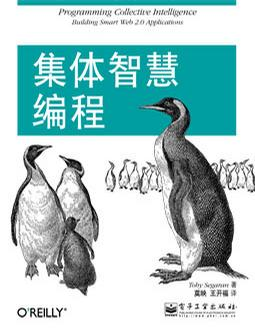

作者: TOBY SEGARAN
出版社: 电子工业出版社
原作名: Programming Collective Intelligence
译者: 莫映 / 王开福
出版年: 2009-1
页数: 334
定价: 59.80元
装帧: 平装
丛书: 博文视点O'reilly系列
ISBN: 9787121075391
本书以机器学习与计算统计为主题背景，专门讲述如何挖掘和分析Web上的数据和资源，如何分析用户体验、市场营销、个人品味等诸多信息，并得出有用的结论，通过复杂的算法来从Web网站获取、收集并分析用户的数据和反馈信息，以便创造新的用户价值和商业价值。全书内容翔实，包括协作过滤技术（实现关联产品推荐功能）、集群数据分析（在大规模数据集中发掘相似的数据子集）、搜索引擎核心技术（爬虫、索引、查询引擎、PageRank算法等）、搜索海量信息并进行分析统计得出结论的优化算法、贝叶斯过滤技术（垃圾邮件过滤、文本过滤）、用决策树技术实现预测和决策建模功能、社交网络的信息匹配技术、机器学习和人工智能应用等。
本书是Web开发者、架构师、应用工程师等的绝佳选择。
Toby Segaran是Genstruct公司的软件开发主管，这家公司涉足计算生物领域，他本人的职责是设计算法，并利用数据挖掘技术来辅助了解药品机理。Toby Segaran还为其他几家公司和数个开源项目服务，帮助它们从收集到的数据当中分析并发掘价值。除此以外，Toby Segaran还建立了几个免费的网站应用，包括流行的tasktoy和Lazybase。他非常喜欢滑雪与品酒，其博客地址是blog.kiwitobes.com，现居于旧金山。
《Programming Collective Intelligence》（中译本《集体智慧编程》）；作者Toby Segaran也是《Beautiful Data : The Stories Behind Elegant Data Solutions》（《数据之美：解密优雅数据解决方案背后的故事》）的作者。这本书最大的优势就是里面没有理论推导和复杂的数学公式，是很不错的入门书。目前中文版已经脱销，对于有志于这个领域的人来说，英文的pdf是个不错的选择，因为后面有很多经典书的翻译都较差，只能看英文版，不如从这个入手。还有，这本书适合于快速看完，因为据评论，看完一些经典的带有数学推导的书后会发现这本书什么都没讲，只是举了很多例子而已。
总的来说，这本书比较浅，学习机器学习更深层的是要对统计、公式、数学等方面有更深刻的认识。